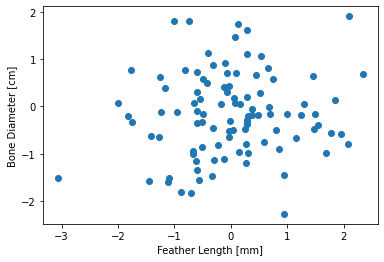

Add content to the book¶
Warning
This book is still being actively developed and this version of should be considered a rough draft. Follow me on GitHub to receive notifications when updates are made.
This section covers how to add content to your book. To utilize jupyter-book you will have to ultimately become very familiar with the official jupyter-book documentation. However for the purposes of kicking the tires this section will take you through the features that are either critical to use, or just cool. Many details will be skipped for the purposes of illustrating what authoring a book with jupyter-book might be like in practice. Consider this chapter a minimum subset of the available functionality needed for authoring content.
In an effort to make leanring syntax more exciting this section will take you through a narrative of adding content to the book you cloned while installing jupyter-book. After getting a feel for how everything works in this section you will probably graduate to just using the jupyter-book cheat sheet to rapidly find the syntax details you need.
Your mission, if you choose to accept it, is to write a (very brief and totally fictitious) book about dinosaurs using the sample book you cloned earlier as a template. Don’t worry if your paleontology skills are rusty, the focus of this activity is on writing the described syntax. You can expect to accomplish the following tasks while reading this chapter.
Create a new chapter¶
In your book directory that you cloned earlier, create a new file markdown file named 05_dino.md. Place the following content into this file and save the file:
05_dino.md
(dino)=
# Did dinosaurs have feathers?
Write your content here...
Note
Writing your content in a markdown (.md) file is one of two ways to author content. The other is to write the same syntax described here into a jupyter notebook (.ipynb). Both methods work equally well, but I chose to focus on markdown because I personally feel it a more appropriate method for long form works. This is purely my opinion, and as they say, your mileage may vary.
Next, open _toc.yml and add an entry for your new chapter. The file should look like this:
toc.yml
- file: 01_intro
- file: 02_setup
- file: 03_build-pub
- file: 04_content
- file: 05_dino
Note
Notice how the .md extension is not included in the _toc.yml file. Both markdown (.md) and jupyter notebook (.ipynb) files can be designated chapters in your jupyter-book. Using notebooks directly as content is not covered in this mini-book, see the official docs for full details.
Save everything and then rebuild the book with jupyter-book build book. If all goes well you should now see your new book chapter in the left hand navigation bar.
Tip
After every prompt to add something to 05_dino.md rebuild the book and refresh your browser to view the changes. If the changes do not appear first check to see if you actually saved the file you were updating. You can also scroll up in the terminal and look for errors/warnings.
Because you will need to issue the build command repeatedly while authoring your book it may be useful to know how to access your command line history. In most terminals simply press the up key once to see the last command that you typed. Press the up key twice to see what you typed two commands ago, and so on. Most of the time you can simply press the up key once and then press enter to build your book.
Headings¶
Headings are created by using a series of ampersands:
Syntax |
Example |
Note |
|---|---|---|
# Heading level 1
## Heading level 2
### Heading level 3
#### Heading level 4
##### Heading level 5
###### Heading level 6
|
# Did dinosaurs have feathers?
|
Level 1-6 headings, denoted by number of |
When writing it is often convenient to reference previous chapters or sections in your book. The (dino)= syntax represents a target header. Regular headers can and do change, target headers are not visible to readers and therefore should not be changed once they are established to avoid breaking links. Don’t put any spaces in your target headers.
Syntax |
Example |
Note |
|---|---|---|
(target_header)=
|
(dino)=
# Did dinosaurs have feathers?
|
See below for instructions on how to reference target headers. |
Markdown vs MyST¶
You will hear two different names for the syntax being thrown around in this chapter. Markdown and Markedly Structured Text (MyST). While there are important differences in the two, none of those differences will matter to a content creator. Just use the syntax described here in your document and thank the creators/maintainers of jupyter-book for saving you from worry about the details because ‘it just works (TM)’.
Regular text¶
Regular (body) text is simply typed into your content file without any special syntax. Edit 05_dino.md to include additional text:
05_dino.md
(dino)=
# Did dinosaurs have feathers?
There is now evidence that dinosaurs may have all had feathers. Part of the controversy of this statement is defining exactly what a feather is...Achillesaurus Diceratops Malarguesaurus Sellacoxa Zhejiangosaurus Incisivosaurus Colonosaurus Albertaceratops Eupodosaurus Lapparentosaurus Siamosaurus Sauraechinodon Frenguellisaurus Chasmosaurus Rapator Brasileosaurus Riojasaurus Ruehleia Qinlingosaurus Anchisaurus Pantydraco Rebbachisaurus Appalachiosaurus Lapampasaurus Cryolophosaurus Gryphoceratops Strenusaurus Nectosaurus Squalodon Anatotitan Hallopus Velociraptor Pinacosaurus Archaeornithomimus Yueosaurus Vulcanodon Szechuanosaurus Hallopus Pleuropeltus.
Numbered and bulleted lists¶
Lists are often a way to summarize key points that you hope a reader skimming your book will pay attention to, or provide step by step instructions.
Ordered lists¶
Syntax |
Example |
Note |
|---|---|---|
1. First item
1. Second item
1. First sub-item
|
|
Assign every item in the list a ‘1.’ and let the compiler properly number the list. This is crucial if you later have to add an item in the middle of the list and don’t want to manually renumber. |
Unordered list¶
Example |
Result |
Note |
|---|---|---|
* First item
* Second item
* First subitem
|
|
An asterisk (*) or dash (-) can be used to denote an unordered list. |
Add a list of locations where dinosaurs are found to 05_dino.md:
Dinosaurs with feathers have been found in:
- Asia
- Australia
- North America
- The Atlantic ocean
Code blocks¶
There are a couple of ways to draw attention to code or commands that a user following your book should use.
Commands¶
Any text placed inside of back ticks will be highlighted.
Syntax |
Example |
Note |
|---|---|---|
`command`
|
Run this |
Preformatted text¶
Any text that is indented with a single tab will be considered preformatted text. This can be useful for drawing attention to commands that a reader should execute by breaking the flow of the text.
Syntax |
Example |
Note |
|---|---|---|
Execute this command:
$ sudo apt update
|
Execute this command: $ sudo apt update
|
Note the copy button in the upper right hand corner |
Code blocks¶
Snippets of code with syntax highlighting can be included in your document as well.
Syntax |
Example |
Note |
|---|---|---|
```python
import numpy as np
print(f'This is index {ii}')
```
|
import numpy as np
print(f'This is index {ii}')
|
Python is one of many languages that syntax highlighting is supported for. |
Add some instructions for installing a fictional software tool to 05_dino.md:
05_dino.md
You can install the feather identification toolbox via pip:
pip instal -U featherid
Then modify your script to locate feathers on pictures of dinosaur bones. This uses computer vision in a way that is beyond the scope of this document to explain, and your ability to understand.
```python
import featherid as fid
for i, X in enumerate(files):
Y[i] = fid.find(X)
```
Notes¶
Adding notes to your content can help readers who wish to learn more investigate further without breaking the flow of your text. In jupyter-book there are two kinds of notes that can be used. Traditional footnotes and Tufte style margin notes.
Warning
Margin notes are not fully supported when generating a PDF.
Footnotes¶
Footnotes can be used to add an interesting comment to text that is not directly relevant to the argument of the text.
Syntax |
Example |
Note |
|---|---|---|
This is body text [^footnote-label].
[^footnote-label]: This is my footnote.
|
Dinosaurs may have had feathers 1. |
Click to follow the footnote which is located at the bottom of the page. |
Margin notes¶
Margin notes, or sidenotes as they were originally called, are located in the margin.
Sidenotes are like footnotes, except they don’t force the reader to jump their eye to the bottom of the page, but instead display off to the side in the margin. Perhaps you have noticed their use in this document already. You are very astute. — Tufte CSS
Syntax |
Example |
Note |
|---|---|---|
```{margin} Optional title
Margin note text goes here
```
|
See margin |
Margin notes are a great example of the web not being like print. |
Links/References¶
There are many ways to generate a link/reference in jupyter-book. Here are the two simplest methods. See numbered references for more advanced use cases.
Markdown links¶
To link to a target header that you created with the (target-header)= syntax simply
Syntax |
Example |
Note |
|---|---|---|
Body text [link text](target-header)
|
See the references section for more details. |
Markdown links can also direct a reader to an external website, or just another markdown header. However using target headers is considered a best practice. |
Document links¶
If you want to link to another document outside the current document you are writing in, then use a document link.
Syntax |
Example |
Note |
|---|---|---|
Body text {doc}`document`
|
See the setup page for more details. |
There are multiple ways to style this link, check the official docs for a complete description. |
Add some notes references, and links to 05_dino.md to help backup your assertions about feathers.
05_dino.md
```{margin}
The filler text is generated from actual dinosaur names. Placing the margin note above the paragraph it is associated with usually results in proper placement of the note.
```
There is now evidence that dinosaurs may have all had feathers. Part of the controversy of this statement is defining exactly what a feather is [^feather]...Achillesaurus Diceratops Malarguesaurus Sellacoxa Zhejiangosaurus Incisivosaurus Colonosaurus Albertaceratops Eupodosaurus Lapparentosaurus...See the next section for more [dinosaur names](more).
[^feather]:To be a true feather, there are characteristics that need to be fulfilled. The structures must be made from a protein called beta-keratin, they must be branched, and finally they must originate from a follicle. For details see: [The first dinosaurs probably didn't have feathers](https://www.nhm.ac.uk/discover/news/2020/march/the-first-dinosaurs-probably-didn-t-have-feathers.html).
(more)=
## More dinosaur names
Chebsaurus Venaticosuchus Yuanmousaurus Rileyasuchus Tianyulong Auroraceratops Acrocanthosaurus Lukousaurus Razanandrongobe Jenghizkhan Malawisaurus Therizinosaurus Razanandrongobe Eustreptospondylus Unescoceratops Shixinggia Parvicursor Gwyneddosaurus Abelisaurus Suzhousaurus Picrodon Herrerasaurus Brontomerus Tangvayosaurus Ultrasaurus Achillobator Quilmesaurus Trigonosaurus Zapsalis
Admonitions¶
An admonition is advice with a hint of scolding, a warning not to do something. When you’re cautioned or warned about some mistake you might be just about to make, or some looming danger, you’re receiving an admonition. — vocabulary.com
Tip
These little boxes are admonition’s. Some of the available admonitions include:
Admonition
Attention
Caution
Danger
Error
Hint
Important
Note
Title
Warning
Syntax |
Example |
Note |
|---|---|---|
```{admonition} Optional title
Text or markdown here
```
|
Watch out! Dinosaurs have sharp teeth |
Add an admonition to 05_dino.md alert your reader to a common mistake.
05_dino.md
```{warning}
Feathers are very difficult to identify in a fossil. Extreme care should be taken when distinguishing between a feather and other grit and debris that may be present.
```
Tables¶
The {list-tables} directive is provided for creating numbered tables. For example this markup produces the result seen in Table 1. To reference this table by number use {numref}`my-table-label`.
Note
There is a table available in markdown as well, but I would suggest that you use the list-table directive because it is easier to write and includes a caption.
```{list-table} General characteristics of Sepia officinalis accessory sex gland ESTs [^sepia].
:header-rows: 0
:name: my-table-label
* - Number of high quality **sequenced** cDNA
- 576
* - Number of high quality ESTs
- 560
* - Average length of high quality ESTs (bp)
- 974.6
* - Number of contigs
- 37
* - Number of singletons
- 186
* - Redundency
- 66.7%
```
Number of high quality sequenced cDNA |
576 |
Number of high quality ESTs |
560 |
Average length of high quality ESTs (bp) |
974.6 |
Number of contigs |
37 |
Number of singletons |
186 |
Redundency |
66.7% |
Tables with more than two columns require you to describe how to spread out the columns with a :widths: auto argument. Table 2 shows an example of a three column table. Also, note the use of column headers.
```{list-table} Three column table
:header-rows: 1
:widths: auto
:name: three-column-table
* - Col 1
- Col 2
- Col 3
* - Data 1.1
- Data 1.2
- Data 1.3
* - Data 2.1
- Data 2.2
- Data 2.3
```
Col 1 |
Col 2 |
Col 3 |
|---|---|---|
Data 1.1 |
Data 1.2 |
Data 1.3 |
Data 2.1 |
Data 2.2 |
Data 2.3 |
Equations¶
If you need to include a mathematical formula that can easily be achieved. The formula is considered inline if it flows with the text like this, \(a^2 +b^2 = c^2\). Or you can add a block formula which is centered on its own line:
Formulas are written in \(\LaTeX\). A good cheat sheet will show most of the common symbols you will need to know. If that fails you can draw the symbol with your mouse and an algorithm will identify your symbol and and show you the \(\LaTeX\) code that will generate it.
Syntax |
Example |
Note |
|---|---|---|
This is an inline formula $1/2sin(\theta)$
|
This is an inline formula \(1/2sin(\theta)\) |
|
This is a block formula
$$
f(x) = x_1 +2x_2
$$
|
This is a block formula
\[
f(x) = x_1 +2x_2
\]
|
|
This is a numbered formula
$$
z=\sqrt{x^2+y^2}
$$ (myLabel)
|
This is a numbered formula
(1)¶\[
z=\sqrt{x^2+y^2}
\]
|
See numbered references to refer to this equation by its number |
Embed results¶
This next section covers a key element of jupyter-book, the ability to embed results from a jupyter notebook into your content. This enables the development of executable books. Adding this capability will slow your writing process down considerably, but over the course of multiple revisions it may just save your sanity.
Note
This section assumes that you have previously created a jupyter notebook. You can read more about notebooks to get a feel for their true power. For now, just create a sample notebook that we can work with:
In your virtual environment, install the prerequisite python libraries
pip install scipy numpy matplotlib myst_nbNavigate to your book directory
cd bookOpen jupyter notebook with
jupyter notebook --no-browserFollow the link provided in the console
Create a new Python 3 notebook and name it
myNotebookPaste the following into the first cell of the notebook and press
shift + enterto execute the cell
import numpy as np
import matplotlib.pyplot as plt
from myst_nb import glue
fig, ax = plt.subplots()
N = 100
x = np.random.randn(N)
y = np.random.randn(N)
plt.plot(x,y,'o')
plt.xlabel('Feather Length [mm]')
plt.ylabel('Bone Diameter [cm]')
glue('random-fig',fig, display=False)
myVar = "42"
glue("myLabel", myVar )
m = np.mean(y) # mean
s = np.std(y) # standard deviation
up = m+2*s # 95% confidence level
low = m-2*s # 5% confidence level
glue('avg',m, display=False)
glue('upper',up, display=False)
glue('lower',low, display=False)
In reality your writing process likely starts with a notebook. After days of meticulous data collection and analysis you finally arrive at a result that you believe is publishable. At that point you would fire up jupyter-book and start describing your results. There are two major use cases for embeding notebook results to consider:
Numerical content
Figures
In all cases you make a variable or figure available in your notebook with the glue('<label>',<variable>) function. The variable is the object that you created in your notebook. You can give it an easy to remember name with the label. You reference the label in your writing when you use the glue directive. See below for the specific use cases of the glue directive to embed content.
Important
The critical benefit of gluing notebook outputs into your document is when you update the variable in your notebook, the changes automatically propogate into your document the next time you rebuild your book. Just make sure your notebook is inside your book directory and jupyter-book takes care of the rest.
Numerical content¶
Numerical content is just numbers.
Syntax |
Example |
Note |
|---|---|---|
The answer to the
“Great Question” of “Life,
the Universe and Everything”
is {glue:}`myLabel`.
|
The answer to the “Great Question” of “Life, the Universe and Everything” is |
In practice you may need to round your results to a few signifigant digits. All of the python format strings can be used with the {glue:text} directive.
Syntax |
Example |
Note |
|---|---|---|
The result was {glue:text}`avg`
(95% CI {glue:text}`lower`/
{glue:text}`upper`).
|
The result was -0.16156338937358977 (95% CI -1.9091848709630883/1.5860580922159089). |
Unformatted text |
The result was
{glue:text}`avg:2.2f`
(95% CI {glue:text}`lower:2.2f`/
{glue:text}`upper:2.2f`).
|
The result was -0.16 (95% CI -1.91/1.59). |
Formatted as a two digit floating point number |
Figures¶
Figures typically help to visualize the results of an analysis. A figure can be added to a document with a just a {glue:}`<figure-label>`, but it is usually more helpful in a technical document to add a numbered figure with a caption.
Syntax |
Example |
Note |
|---|---|---|
```{glue:figure} <figure-label>
---
figwidth: 150px
name: "<figure-reference-name>"
---
Figure caption written in markdown
```
|

Fig. 1 Feather length vs bone diameter¶ |
See numbered refrences to refer to this figure by its figure number. |
Numbered Refrences¶
Numbered references are a more advanced version of regular references, but very common in technical documents. To make a numbered reference you of course have to have a numbered object to refer to. Numberd references can be made to:
Figures
Tables
Equations
Tip
Equations are the odd ball in this group. Figures and tables use the {numref} directive, while equations have their own {eq} directive. If you reference a figure or table the reference will be inserted as Figure X or Table Y. If you reference an equation it will be inserted as (1).
Figures¶
Syntax |
Example |
Note |
|---|---|---|
{numref}`<numbered-label>`
|
See Fig. 1 for the relationship between… |
See the official docs for many more options |
Tables¶
To reference a table by number use {numref}`my-table-label`.
Syntax |
Example |
Note |
|---|---|---|
{numref}`<label>`
|
See Table 1 for a summary of results |
See the official docs for many more options |
Equations¶
Syntax |
Example |
Note |
|---|---|---|
{eq}`<label>`
|
Equation (1) shows the result |
A numbered equation is needed to use this method |
Citations¶
Citations require couple steps.
Generate a refrences.bib file and place it in your
bookdirectory. This should be a standard option in any reference manager (e.g. Zotero). See references if you need a sample.bibfile for testing.Cite using the directive
{cite}`citation-label`Include a list of citations at the end of the document
Syntax |
Example |
Note |
|---|---|---|
{cite}`citation-label`
|
As described in [Sto15] |
The citation will not display properly until the bibliography is linked as shown below |
Then include the bibliography with:
```{bibliography} references.bib
:filter: docname in docnames
```
Your bibliography will be automatically generated like this, and can be formatted to meet any style guide.
- Sto15
James V. Stone. Bayes’ rule with Python: a tutorial introduction to Bayesian analysis. Sebtel Press, Sheffield, England, first edition, 2015. ISBN 978-0-9933679-3-9. OCLC: ocn970361039.
Annotations¶
A very cool integration that jupyter-book makes available is annotations. An annotation is a way for readers to make notes on your document. Seeing is believing, so view the demo on the jupyter-book website to see it in action and learn how to adjust the _config.yml file to enable annotations.